BOOK X. PROPOSITIONS.¶
Two unequal magnitudes being set out, if from the greater there be subtracted a magnitude greater than its half, and from that which is left a magnitude greater than its half, and if this process be repeated continually, there will be left some magnitude which will be less than the lesser magnitude set out.
The squares on straight lines commensurable in length have to one another the ratio which a square number has to a square number; and squares which have to one another the ratio which a square number has to a square number will also have their sides commensurable in length. But the squares on straight lines incommensurable in length have not to one another the ratio which a square number has to a square number; and squares which have not to one another the ratio which a square number has to a square number will not have their sides commensurable in length either.
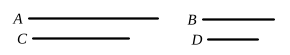
If four magnitudes be proportional, and the first be commensurable with the second, the third will also be commensurable with the fourth ; and, if the first be incommensurable with the second, the third will also be incommensurable with the fourth.
If four straight lines be proportional, and the square on the first be greater than the square on the second by the square on a straight line commensurable with the first, the square on the third will also be greater than the square on the fourth by the square on a straight line commensurable with the third.
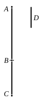
If two incommensurable magnitudes be added together, the whole will also be incommensurable with each of them; and, if the whole be incommensurable with one of them, the original magnitudes will also be incommensurable.
If there be two unequal straight lines, and to the greater there be applied a parallelogram equal to the fourth part of the square on the less and deficient by a square figure, and if it divide it into parts which are commensurable in length, then the square on the greater will be greater than the square on the less by the square on a straight line commensurable with the greater.
If there be two unequal straight lines, and to the greater there be applied a parallelogram equal to the fourth part of the square on the less and deficient by a square figure, and if it divide it into parts which are incommensurable, the square on the greater will be greater than the square on the less by the square on a straight line incommensurable with the greater.
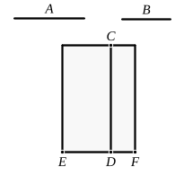
A straight line commensurable with a medial straight line is medial.
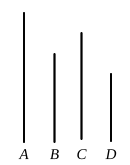
To find two medial straight lines commensurable in square only, containing a rational rectangle, and such that the square on the greater is greater than the square on the less by the square on a straight line commensurable in length with the greater.
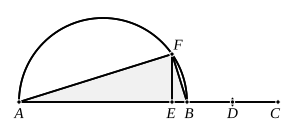
To find two straight lines incommensurable in square which make the sum of the squares on them rational but the rectangle contained by them medial.
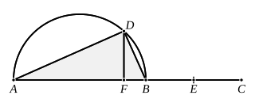
To find two straight lines incommensurable in square which make the sum of the squares on them medial but the rectangle contained by them rational.
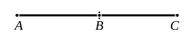
If two rational straight lines commensurable in square only be added together, the whole is irrational; and let it be called binomial.
If two straight lines incommensurable in square which make the sum of the squares on them medial, and the rectangle contained by them medial and also incommensurable with the sum of the squares on them, be added together, the whole straight line is irrational; and let it be called the side of the sum of two medial areas.
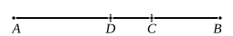
A binomial straight line is divided into its terms at one point only.
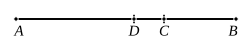
A first bimedial straight line is divided at one point only.
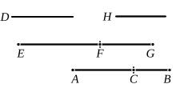
To find the first binomial straight line.
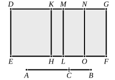
The square on the first bimedial straight line applied to a rational straight line produces as breadth the second binomial.
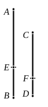
A straight line commensurable with the side of a rational plus a medial area is itself also the side of a rational plus a medial area.
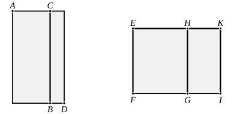
If a rational and a medial area be added together, four irrational straight lines arise, namely a binomial or a first bimedial or a major or a side of a rational plus a medial area.
If from a straight line there be subtracted a straight line which is incommensurable in square with the whole, and which with the whole makes the sum of the squares on them medial, but twice the rectangle contained by them rational, the remainder is irrational: and let it be called that which produces with a rational area a medial whole.
If from a straight line there be subtracted a straight line which is incommensurable in square with the whole and which with the whole makes the sum of the squares on them medial, twice the rectangle contained by them medial, and further the squares on them incommensurable with twice the rectangle contained by them, the remainder is irrational; and let it be called that which produces with a medial area a medial whole.
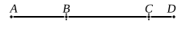
To a first apotome of a medial straight line only one medial straight line can be annexed which is commensurable with the whole in square only and which contains with the whole a rational rectangle.
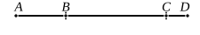
To a straight line which produces with a rational area a medial whole only one straight line can be annexed which is incommensurable in square with the whole straight line and which with the whole straight line makes the sum of the squares on them medial, but twice the rectangle contained by them rational.
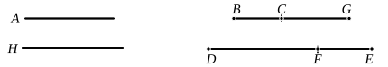
To find the fourth apotome.
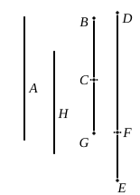
To find the fifth apotome.
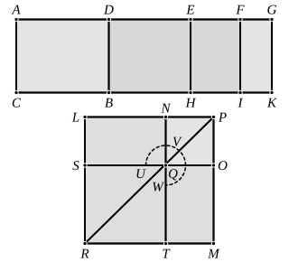
If an area be contained by a rational straight line and a fourth apotome, the “side” of the area is minor.
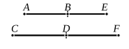
A straight line commensurable with a minor straight line is minor.
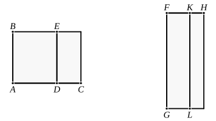
If from a medial area a rational area be subtracted, there arise two other irrational straight lines, either a first apotome of a medial straight line or a straight line which produces with a rational area a medial whole.
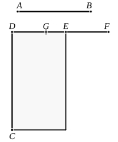
The apotome is not the same with the binomial straight line.